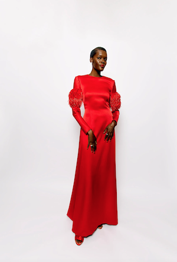

For Sheila Atim, who stars in The Woman King as Amenza, the reaction to the film has been “above and beyond” what she could have imagined. “Across the world, in all of these different territories, all of these different communities, people of different identities, everyone is just so behind us and so behind the film – really recognising the hard work that’s gone into it,” she tells British Vogue. The promotional whirlwind that surrounds a film of this scale has seen Atim’s diary taken over by press junkets and red-carpet appearances, but the star has taken it all in her stride. “I’ve really enjoyed the way that everyone has shown up 100 per cent, with the knowledge that this is the time to celebrate ourselves and each other and to put our best feet forward,” she says with a smile, ahead of the film’s London premiere.
Her chosen look for the occasion? A “wonderful” fiery red gown by Prada, with tasselled beaded details on the sleeves that she likens to the armbands worn by the Agojie, the all-female army of the West African kingdom of Dahomey, which is led by Viola Davis in The Woman King. With every look that Atim has worn on the press trail, there have been subtle – at times, serendipitous – nods to her fearless character. “It’s about trying to find that little bit of myself, Sheila, but also tying that into the project,” she explains.
 The Story Of SheilaThe Woman King inspired the actor to embark upon a new style journey – which she summarises as “edgy twists on classics” – and she credits the help of her stylist Abisoye Odugbesan, hairstylist Subrina Kidd and make-up artist Michelle Leandra with helping her look to grow and evolve. “I have a wonderful team around me who are so supportive of my ideas and bring their own brilliant expertise and ideas as well,” she says. “They’re all fantastic Black women – dark-skinned Black women – working in their fields, so having those conversations about what I want this press tour to look like and be, there’s such an easy shorthand there. I’m really glad that I can have them with me.”